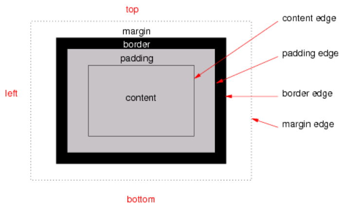
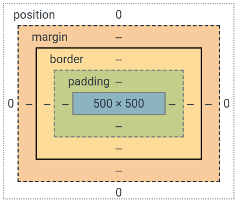

<!DOCTYPE html><html><head><meta charset="utf-8"><title>重新認識 CSS - Box model | Titangene Blog</title><meta http-equiv="X-UA-Compatible" content="IE=edge"><meta name="viewport" content="width=device-width,initial-scale=1,maximum-scale=1"><meta name="HandheldFriendly" content="True"><meta name="apple-mobile-web-app-capable" content="yes"><meta name="author" content="Titangene"><link rel="shortcut icon" href="/favicon.ico"><link rel="alternate" href="/atom.xml" title="Titangene Blog"><meta name="description" content="在佈局 document 時，UA 的渲染引擎會根據 CSS box model 將每個元素表示為一個矩形框 (rectangular box)。CSS 會確定這些 box 的大小、位置和屬性 (顏色、背景、border 大小…等)。本篇將介紹 CSS 的 Box model。"><meta property="og:type" content="article"><meta property="og:title" content="重新認識 CSS - Box model"><meta property="og:url" content="https://titangene.github.io/article/css-box-model.html"><meta property="og:site_name" content="Titangene Blog"><meta property="og:description" content="在佈局 document 時，UA 的渲染引擎會根據 CSS box model 將每個元素表示為一個矩形框 (rectangular box)。CSS 會確定這些 box 的大小、位置和屬性 (顏色、背景、border 大小…等)。本篇將介紹 CSS 的 Box model。"><meta property="og:locale" content="zh_TW"><meta property="og:image" content="https://titangene.github.io/images/cover/css.png"><meta property="article:published_time" content="2019-09-29T11:30:15.000Z"><meta property="article:modified_time" content="2020-02-09T14:29:50.000Z"><meta property="article:author" content="Titangene"><meta property="article:tag" content="IT 鐵人賽"><meta name="twitter:card" content="summary_large_image"><meta name="twitter:image" content="https://titangene.github.io/images/cover/css.png"><meta name="twitter:creator" content="@titangeneTW"><meta name="twitter:site" content="@titangene_blog"><meta property="fb:admins" content="100001106016019"><meta property="fb:app_id" content="2470546159839111"><meta property="og:image:width" content="1200"><meta property="og:image:height" content="630"><meta name="google-site-verification" content="AaJ39L7h-nWwJjXJMhAMtXSF6H6BUgGWXC80kYvLic8"><link href="https://fonts.googleapis.com/css2?family=Roboto&display=swap" rel="stylesheet"><link href="https://fonts.googleapis.com/css?family=Source+Code+Pro&display=swap" rel="stylesheet"><link rel="stylesheet" href="https://cdnjs.cloudflare.com/ajax/libs/font-awesome/5.13.0/css/all.min.css"><link rel="stylesheet" href="https://unpkg.com/gitalk/dist/gitalk.css"><link rel="stylesheet" href="/style.css"><script async src="https://www.googletagmanager.com/gtag/js?id=UA-129758206-1"></script><script>!function(a){function n(){dataLayer.push(arguments)}a.dataLayer=a.dataLayer||[],n("js",new Date),n("config","UA-129758206-1")}(window)</script><script>function setLoadingBarProgress(e){document.getElementById("loading-bar").style.width=e+"%"}</script><meta name="generator" content="Hexo 4.2.0"><link rel="alternate" href="/atom.xml" title="Titangene Blog" type="application/atom+xml"></head></html><body><div id="loading-bar-wrapper"><div id="loading-bar"></div></div><script>setLoadingBarProgress(20)</script><header class="l_header"><div class="wrapper"><div class="nav-main container container--flex"><a class="logo flat-box" href="/">Titangene Blog</a><div class="menu"><ul class="h-list"><li><a class="flat-box nav-home" href="/">Home</a></li><li><a class="flat-box nav-archives" href="/archives">Archives</a></li></ul><div class="underline"></div></div><div class="m_search"><form name="searchform" class="form u-search-form"><input type="text" class="input u-search-input" placeholder="Search"> <i class="fas fa-search"></i></form></div><ul class="switcher h-list"><li class="s-search"><a class="fas fa-search" href="javascript:void(0)"></a></li><li class="s-menu"><a class="fas fa-bars" href="javascript:void(0)"></a></li></ul></div><div class="nav-sub container container--flex"><a class="logo flat-box" href="/">Titangene Blog</a><ul class="switcher h-list"><li class="s-comment"><a class="far fa-comment-alt" href="javascript:void(0)"></a></li><li class="s-top"><a class="fas fa-arrow-up" href="javascript:void(0)"></a></li><li class="s-toc"><a class="fas fa-list-ol" href="javascript:void(0)"></a></li></ul></div></div></header><aside class="menu-phone"><nav><a href="/" class="nav-home nav">Home </a><a href="/archives" class="nav-archives nav">Archives</a></nav></aside><script>setLoadingBarProgress(40)</script><div class="l_body"><div class="container clearfix"><div class="l_main"><article id="post-css-box-model" class="post white-box article-type-post" itemscope itemprop="blogPost"><section class="meta"><h2 class="title"><a href="/article/css-box-model.html">重新認識 CSS - Box model</a></h2><span class="post-time"><span class="post-meta-item-icon"><i class="fa fa-calendar"></i> </span><span class="post-meta-item-text">發表於</span> <time title="建立時間：2019-09-29 19:30:15" itemprop="dateCreated datePublished" datetime="2019-09-29T19:30:15+08:00">2019-09-29 </time><span class="post-meta-divider">|</span> <span class="post-meta-item-icon"><i class="fa fa-calendar-check"></i> </span><span class="post-meta-item-text">更新於</span> <time title="修改時間：2020-02-09 22:29:50" itemprop="dateModified" datetime="2020-02-09T22:29:50+08:00">2020-02-09</time></span> <span class="comments-count"><span class="post-meta-divider">|</span> <span class="post-meta-item-icon"><i class="fas fa-comment"></i> </span><a href="https://titangene.github.io/article/css-box-model.html#comments" class="article-comment-count">留言</a></span><div class="post-category"><span class="post-meta-item-icon"><i class="fa fa-folder"></i> </span><span class="post-meta-item-text">分類於</span> <span itemprop="about" itemscope itemtype="http://schema.org/Thing"><a href="/categories/css/" itemprop="url" rel="index"><span itemprop="name">CSS</span></a></span></div></section><section class="toc-wrapper"><h3>目錄</h3><ol class="toc"><li class="toc-item toc-level-2"><a class="toc-link" href="#前言"><span class="toc-text">前言</span></a></li><li class="toc-item toc-level-2"><a class="toc-link" href="#content"><span class="toc-text">content</span></a></li></ol></section><section class="article typo"><div class="article-entry" itemprop="articleBody"><p></p><p>在佈局 document 時，UA 的渲染引擎會根據 CSS box model 將每個元素表示為一個矩形框 (rectangular box)。CSS 會確定這些 box 的大小、位置和屬性 (顏色、背景、border 大小…等)。本篇將介紹 CSS 的 Box model。</p><a id="more"></a><h2 id="前言"><a class="header-anchor" href="#前言"></a>前言</h2><blockquote><p>「重新認識 CSS」這個系列名稱的由來就如其名，我想要重新認識它。雖然以前就有學過 CSS，但這次想從 CSS Spec 中學到最原始的定義和內容，更加了解 CSS 的原理，讓我在切版的時候可以更加確定自己在做什麼，我踩到的雷只是因為我不夠了解它才會炸開。</p><p>在這 30 天的內容中，會將 Spec 內看到的資料整理成這個系列，也希望正在學 CSS 的各位可以更加了解它。另外我也會同時將文章發至我的 Blog，如果想直接看文內的程式碼 Demo 畫面，可以到我的 Blog 來看 😃。</p><p>本文同步發表於 iT 邦幫忙：<a href="https://ithelp.ithome.com.tw/articles/10222331" target="_blank" rel="noopener">重新認識 CSS - Box model</a></p><p>「重新認識 CSS」系列文章發文於：</p><ul><li><a href="https://ithelp.ithome.com.tw/users/20117586/ironman/2617" target="_blank" rel="noopener">iT 邦幫忙</a></li><li><a href="https://titangene.github.io/tags/it-%E9%90%B5%E4%BA%BA%E8%B3%BD/">Titangene Blog</a></li></ul></blockquote><p>每個 box 都是由下面這四個區域 (area) 所組成：</p><ul><li>content area (例如：文字、圖片 … 等)</li><li>padding area</li><li>border area</li><li>margin area</li></ul><p>這些區域 (area) 都是由各邊緣 (edge) 所定義：</p><ul><li>content edge<ul><li>環繞著由 box 的 <a href="https://www.w3.org/TR/CSS22/visudet.html#Computing_widths_and_margins" target="_blank" rel="noopener">width</a> 和 [height] 指定的矩形 (rectangle)</li><li>通常取決於元素的 <a href="https://www.w3.org/TR/CSS22/conform.html#rendered-content" target="_blank" rel="noopener">render 內容</a></li></ul></li><li>padding edge<ul><li>padding edge 環繞著 box padding</li><li>如果 <code>padding</code> 為 0 時，那 padding edge 也是 content edge</li></ul></li><li>border edge<ul><li>border edge 環繞著 box border</li><li>如果 <code>border</code> 為 0 時，那 border edge 也是 content edge</li></ul></li><li>margin edge<ul><li>margin edge 環繞著 box margin</li><li>如果 <code>margin</code> 為 0 時，那 margin edge 也是 content edge</li></ul></li></ul><p>如下圖：</p><p></p><p>用 Chrome DevTools (開發者工具) 也可以看到 box model：</p><p></p><p>上圖中的各種顏色由外而內分別為：</p><ul><li>白色：position (與 box model 無關，之後會介紹此部份)</li><li>橘色：margin</li><li>黃色：border</li><li>綠色：padding</li><li>藍色：content</li></ul><p>圖片來源：<a href="https://www.w3.org/TR/css-box-3/#box-model" target="_blank" rel="noopener">CSS Box Model Module Level 3</a></p><p>margin、border 和 padding 可分為 top、right、bottom 和 left 四個部份，可用各自的 CSS 屬性來設定，語法都很類似。</p><p>如果要各別指定上下左右，下面以 padding 的語法為例：</p><figure class="highlight css"><table><tr><td class="gutter"><pre><span class="line">1</span><br><span class="line">2</span><br><span class="line">3</span><br><span class="line">4</span><br></pre></td><td class="code"><pre><code class="hljs css"><span class="hljs-selector-tag">padding-top</span>: 10<span class="hljs-selector-tag">px</span>;<br><span class="hljs-selector-tag">padding-right</span>: 20<span class="hljs-selector-tag">px</span>;<br><span class="hljs-selector-tag">padding-bottom</span>: 30<span class="hljs-selector-tag">px</span>;<br><span class="hljs-selector-tag">padding-left</span>: 40<span class="hljs-selector-tag">px</span>;<br></code></pre></td></tr></table></figure><p>如果要同時設定多個部份，可以使用簡寫屬性來設定，語法如下：</p><figure class="highlight css"><table><tr><td class="gutter"><pre><span class="line">1</span><br><span class="line">2</span><br><span class="line">3</span><br><span class="line">4</span><br></pre></td><td class="code"><pre><code class="hljs css">屬性: 上下左右;<br>屬性: 上下 左右;<br>屬性: 上 左右 下;<br>屬性: 上 右 下 左;<br></code></pre></td></tr></table></figure><p>下面以 <code>padding</code> 這個簡寫屬性為例，只在此簡寫屬性指定 1 個屬性值時，代表同時指定 <code>padding</code> 的上下左右部份，例如：</p><figure class="highlight css"><table><tr><td class="gutter"><pre><span class="line">1</span><br></pre></td><td class="code"><pre><code class="hljs css"><span class="hljs-selector-tag">padding</span>: 10<span class="hljs-selector-tag">px</span>;<br></code></pre></td></tr></table></figure><p>等同於：</p><figure class="highlight css"><table><tr><td class="gutter"><pre><span class="line">1</span><br><span class="line">2</span><br><span class="line">3</span><br><span class="line">4</span><br></pre></td><td class="code"><pre><code class="hljs css"><span class="hljs-selector-tag">padding-top</span>: 10<span class="hljs-selector-tag">px</span>;<br><span class="hljs-selector-tag">padding-right</span>: 10<span class="hljs-selector-tag">px</span>;<br><span class="hljs-selector-tag">padding-bottom</span>: 10<span class="hljs-selector-tag">px</span>;<br><span class="hljs-selector-tag">padding-left</span>: 10<span class="hljs-selector-tag">px</span>;<br></code></pre></td></tr></table></figure><p>如果在簡寫屬性指定 2 個屬性值時，代表分別指定 <code>padding</code> 的上下、左右部份，例如：</p><figure class="highlight css"><table><tr><td class="gutter"><pre><span class="line">1</span><br></pre></td><td class="code"><pre><code class="hljs css"><span class="hljs-selector-tag">padding</span>: 10<span class="hljs-selector-tag">px</span> 20<span class="hljs-selector-tag">px</span>;<br></code></pre></td></tr></table></figure><p>等同於：</p><figure class="highlight css"><table><tr><td class="gutter"><pre><span class="line">1</span><br><span class="line">2</span><br><span class="line">3</span><br><span class="line">4</span><br></pre></td><td class="code"><pre><code class="hljs css"><span class="hljs-selector-tag">padding-top</span>: 10<span class="hljs-selector-tag">px</span>;<br><span class="hljs-selector-tag">padding-right</span>: 20<span class="hljs-selector-tag">px</span>;<br><span class="hljs-selector-tag">padding-bottom</span>: 10<span class="hljs-selector-tag">px</span>;<br><span class="hljs-selector-tag">padding-left</span>: 20<span class="hljs-selector-tag">px</span>;<br></code></pre></td></tr></table></figure><p>如果在簡寫屬性指定 3 個屬性值時，代表分別指定 <code>padding</code> 的上、左右和下部份，例如：</p><figure class="highlight css"><table><tr><td class="gutter"><pre><span class="line">1</span><br></pre></td><td class="code"><pre><code class="hljs css"><span class="hljs-selector-tag">padding</span>: 10<span class="hljs-selector-tag">px</span> 20<span class="hljs-selector-tag">px</span> 30<span class="hljs-selector-tag">px</span>;<br></code></pre></td></tr></table></figure><p>等同於：</p><figure class="highlight css"><table><tr><td class="gutter"><pre><span class="line">1</span><br><span class="line">2</span><br><span class="line">3</span><br><span class="line">4</span><br></pre></td><td class="code"><pre><code class="hljs css"><span class="hljs-selector-tag">padding-top</span>: 10<span class="hljs-selector-tag">px</span>;<br><span class="hljs-selector-tag">padding-right</span>: 20<span class="hljs-selector-tag">px</span>;<br><span class="hljs-selector-tag">padding-bottom</span>: 30<span class="hljs-selector-tag">px</span>;<br><span class="hljs-selector-tag">padding-left</span>: 20<span class="hljs-selector-tag">px</span>;<br></code></pre></td></tr></table></figure><p>如果在簡寫屬性指定 4 個屬性值時，代表分別指定 <code>padding</code> 的上、右、下、左部份 (以順時針的方向會比較好記憶)，例如：</p><figure class="highlight css"><table><tr><td class="gutter"><pre><span class="line">1</span><br></pre></td><td class="code"><pre><code class="hljs css"><span class="hljs-selector-tag">padding</span>: 10<span class="hljs-selector-tag">px</span> 20<span class="hljs-selector-tag">px</span> 30<span class="hljs-selector-tag">px</span> 40<span class="hljs-selector-tag">px</span>;<br></code></pre></td></tr></table></figure><p>等同於：</p><figure class="highlight css"><table><tr><td class="gutter"><pre><span class="line">1</span><br><span class="line">2</span><br><span class="line">3</span><br><span class="line">4</span><br></pre></td><td class="code"><pre><code class="hljs css"><span class="hljs-selector-tag">padding-top</span>: 10<span class="hljs-selector-tag">px</span>;<br><span class="hljs-selector-tag">padding-right</span>: 20<span class="hljs-selector-tag">px</span>;<br><span class="hljs-selector-tag">padding-bottom</span>: 30<span class="hljs-selector-tag">px</span>;<br><span class="hljs-selector-tag">padding-left</span>: 40<span class="hljs-selector-tag">px</span>;<br></code></pre></td></tr></table></figure><h2 id="content"><a class="header-anchor" href="#content"></a>content</h2><ul><li>content area (例如：文字、圖片 … 等)</li><li>content area 的大小：content width 和 content height，取決於幾個因素：<ul><li>生成該 box 的元素是否設定了 <code>width</code> 或 <code>height</code> 屬性</li><li>該 box 是否包含 text 或其它 box</li><li>該 box 是不是表格</li><li>… 等</li></ul></li><li>通常有 <code>background-color</code> 或 <code>background-image</code></li></ul><p>資料來源：</p><ul><li><a href="https://www.w3.org/TR/CSS22/box.html" target="_blank" rel="noopener">CSS 2.2 - 8. Box model</a></li><li><a href="https://www.w3.org/TR/css-box-3/#box-model" target="_blank" rel="noopener">CSS Box Model Module Level 3</a></li><li><a href="https://dwatow.github.io/2017/12-17-iron-man-2018/iron-man-2018-day7/" target="_blank" rel="noopener">前端新手村 垂直排列 與 Box Model</a></li></ul></div><div class="article-tags tags"><a href="/tags/it-%E9%90%B5%E4%BA%BA%E8%B3%BD/" title="IT 鐵人賽">IT 鐵人賽</a></div></section><div class="article-share-links"><span>分享：</span> <a class="fab fa-facebook-f" title="Facebook" target="_blank" href="javascript:window.open('https://www.facebook.com/sharer.php?u=https%3A%2F%2Ftitangene.github.io%2Farticle%2Fcss-box-model.html', 'Share on Facebook','width=600, height=600')"></a> <a class="fab fa-twitter" title="Twitter" target="_blank" href="javascript:window.open('https://twitter.com/share?url=https%3A%2F%2Ftitangene.github.io%2Farticle%2Fcss-box-model.html&amp;text=重新認識 CSS - Box model&amp;hashtags=IT鐵人賽&amp;via=titangene_blog', 'Share on Twitter','width=600, height=260')"></a> <a class="fab fa-linkedin-in" title="Linkedin" target="_blank" href="javascript:window.open('https://www.linkedin.com/shareArticle?mini=true&amp;url=https%3A%2F%2Ftitangene.github.io%2Farticle%2Fcss-box-model.html&amp;title=重新認識 CSS - Box model', 'Share on Linkedin','width=600, height=600')"></a> <a class="fab fa-facebook-messenger" title="Facebook Messenger" target="_blank" href="javascript:window.open('http://www.facebook.com/dialog/send?app_id=2470546159839111&amp;link=https%3A%2F%2Ftitangene.github.io%2Farticle%2Fcss-box-model.html&amp;display=popup&amp;redirect_uri=https%3A%2F%2Fwww.facebook.com%2Fdialog%2Freturn%2Fclose%23_%3D_', 'Send in Messenger','width=600, height=600')"></a> <a class="fab fa-telegram-plane" href="https://telegram.me/share/url?url=https%3A%2F%2Ftitangene.github.io%2Farticle%2Fcss-box-model.html&text=重新認識 CSS - Box model" target="_blank"></a></div><nav id="article-nav"><a href="/article/css-import.html" id="article-nav-prev" class="article-nav-link-wrap" title="重新認識 CSS - @import" rel="prev"><strong class="article-nav-caption">Prev</strong><p class="article-nav-title">重新認識 CSS - @import</p><i class="fas fa-angle-left"></i> </a><a href="/article/css-border.html" id="article-nav-next" class="article-nav-link-wrap" title="重新認識 CSS - Box model：border" rel="next"><strong class="article-nav-caption">Next</strong><p class="article-nav-title">重新認識 CSS - Box model：border</p><i class="fas fa-angle-right"></i></a></nav><section id="list_related_posts"><h2>相關文章</h2><ul class="related-posts"><li class="related-posts-item"><a class="related-posts-link" href="/article/css-bfc.html">重新認識 CSS - Block formatting context (BFC)</a><div class="related-posts-item-abstract">本篇將介紹 CSS 的 block formatting context (BFC)。前言「重新認識 CSS」這個系列名稱的由來就如其名，我想要重新認識它。雖然以前就有學過 CSS，但這次想從 CSS Spec 中學到最</div></li><li class="related-posts-item"><a class="related-posts-link" href="/article/css-visibility.html">重新認識 CSS - visibility</a><div class="related-posts-item-abstract">本篇將介紹 CSS 的 visibility 屬性。前言「重新認識 CSS」這個系列名稱的由來就如其名，我想要重新認識它。雖然以前就有學過 CSS，但這次想從 CSS Spec 中學到最原始的定義和內容，更加了解 CSS</div></li><li class="related-posts-item"><a class="related-posts-link" href="/article/css-collapsing-margins.html">重新認識 CSS - Collapsing margins</a><div class="related-posts-item-abstract">兩個 box 之間的 margin 相鄰 (adjoining) 時，可能會讓 margin 發生合併，這個現象就被稱為 collapsing margin，而合併的 margin 就被稱為 collapsed marg</div></li><li class="related-posts-item"><a class="related-posts-link" href="/article/css-series-catalog.html">重新認識 CSS - 總結 & 系列目錄</a><div class="related-posts-item-abstract">終於來到鐵人賽的最後一天！本篇對「重新認識 CSS」此系列做個總結，並整理此系列中的每篇文章可對應到哪些 CSS Spec。前言「重新認識 CSS」這個系列名稱的由來就如其名，我想要重新認識它。雖然以前就有學過 CSS，</div></li><li class="related-posts-item"><a class="related-posts-link" href="/article/css-import.html">重新認識 CSS - @import</a><div class="related-posts-item-abstract">CSS 的 @import 規則可以從其他 style sheet 中 import 樣式規則，本篇將介紹如何使用。前言「重新認識 CSS」這個系列名稱的由來就如其名，我想要重新認識它。雖然以前就有學過 CSS，但這次想</div></li><li class="related-posts-item"><a class="related-posts-link" href="/article/css-attribute-value.html">重新認識 CSS - CSS 屬性值</a><div class="related-posts-item-abstract">在介紹各種 CSS 屬性之前，先來介紹屬性值，CSS 的屬性值分為：整數和實數、Lengths (長度)、百分比、URLs 和 URIs、Counters (計數器)、顏色、字串。前言「重新認識 CSS」這個系列名稱的由</div></li></ul></section><section class="comments" id="comments"><h2>討論區</h2><div id="gitalk-container"></div></section></article><script>window.subData={title:"重新認識 CSS - Box model",tools:!0}</script></div><aside class="l_side"><section class="m_widget about"><div class="avatar-section"><style>.avatar-cover{background:url(/images/avatar_cover.jpg) 0 10%/cover no-repeat}</style><div class="avatar-cover"></div></div><div class="header">Titangene</div><div class="content"><div class="desc">利用 blog 紀錄學習歷程</div></div><div class="content"><meta itemprop="url" content="https://titangene.github.io"><div class="social-wrapper"><a itemprop="sameAs" href="https://github.com/titangene" class="social github" target="_blank" rel="external"><span class="fab fa-github-alt"></span> </a><a itemprop="sameAs" href="https://www.facebook.com/titangene.tw" class="social facebook" target="_blank" rel="external"><span class="fab fa-facebook-square"></span> </a><a itemprop="sameAs" href="https://www.instagram.com/titangene/" class="social instagram" target="_blank" rel="external"><span class="fab fa-instagram"></span> </a><a itemprop="sameAs" href="https://www.flickr.com/photos/titangene" class="social flickr" target="_blank" rel="external"><span class="fab fa-flickr"></span> </a><a itemprop="sameAs" href="/atom.xml" class="social rss" target="_blank" rel="external"><span class="fas fa-rss"></span></a></div></div></section><section class="m_widget facebook_page"><div class="fb-page" data-href="https://www.facebook.com/titangene.blog/" data-width="250" data-small-header="false" data-adapt-container-width="false" data-hide-cover="false" data-show-facepile="true"><blockquote cite="https://www.facebook.com/titangene.blog/" class="fb-xfbml-parse-ignore"><p><a href="https://www.facebook.com/titangene.blog/" class="social facebook" target="_blank"><span class="fab fa-facebook-square"></span></a></p><p><a href="https://www.facebook.com/titangene.blog/" target="_blank" rel="noopener">Titangene Blog</a></p><p>Loading...</p></blockquote></div></section><section class="m_widget recent"><div class="header">Recents</div><div class="content"><ul class="entry"><li><a itemprop="url" class="flat-box" href="/article/recommend-chrome-extension-4.html"><time>2020-08-30</time><div class="name">推薦 Chrome Extension：翻譯篇 - 新同文堂</div></a></li><li><a itemprop="url" class="flat-box" href="/article/recommend-chrome-extension-3.html"><time>2020-08-23</time><div class="name">推薦 Chrome Extension：YouTube 篇</div></a></li><li><a itemprop="url" class="flat-box" href="/article/recommend-chrome-extension-2.html"><time>2020-08-16</time><div class="name">推薦 Chrome Extension：新分頁篇</div></a></li><li><a itemprop="url" class="flat-box" href="/article/recommend-chrome-extension-1.html"><time>2020-08-09</time><div class="name">推薦 Chrome Extension：Markdown &amp; 頁面主題篇</div></a></li><li><a itemprop="url" class="flat-box" href="/article/jest-jquery-dom-testing.html"><time>2020-08-02</time><div class="name">Jest：DOM 測試 (jQuery)</div></a></li><li><a itemprop="url" class="flat-box" href="/article/jest-manual-mocks.html"><time>2020-07-26</time><div class="name">Jest：Manual Mocks</div></a></li><li><a itemprop="url" class="flat-box" href="/article/jest-timer-mocks.html"><time>2020-07-19</time><div class="name">Jest：Timer Mocks</div></a></li></ul></div></section></aside><script>setLoadingBarProgress(60)</script></div></div><footer id="footer" class="clearfix"><div class="social-wrapper"><a href="https://github.com/titangene" class="social github" target="_blank" rel="external"><span class="fab fa-github-alt"></span> </a><a href="https://www.facebook.com/titangene.tw" class="social facebook" target="_blank" rel="external"><span class="fab fa-facebook-square"></span> </a><a href="https://www.instagram.com/titangene/" class="social instagram" target="_blank" rel="external"><span class="fab fa-instagram"></span> </a><a href="https://www.flickr.com/photos/titangene" class="social flickr" target="_blank" rel="external"><span class="fab fa-flickr"></span> </a><a href="/atom.xml" class="social rss" target="_blank" rel="external"><span class="fas fa-rss"></span></a></div><div>© 2018 - 2020 <span itemprop="copyrightHolder">Titangene</span></div><div>Powered by <a href="https://hexo.io/" target="_blank" class="codename" rel="external noopener">Hexo</a> - Theme <a href="https://github.com/stkevintan/hexo-theme-material-flow" target="_blank" class="codename" rel="external noopener">MaterialFlow</a></div><div><a rel="license noopener" href="http://creativecommons.org/licenses/by-nc-sa/4.0/" target="_blank" rel="external noopener"></a></div></footer><script>setLoadingBarProgress(80)</script><script src="//cdnjs.cloudflare.com/ajax/libs/jquery/2.1.4/jquery.min.js"></script><script src="https://cdnjs.cloudflare.com/ajax/libs/clipboard.js/2.0.0/clipboard.min.js"></script><script src="https://unpkg.com/gitalk/dist/gitalk.min.js"></script><script src="/js/jquery.fitvids.js"></script><script>var SEARCH_SERVICE="hexo",ROOT="/";ROOT.endsWith("/")||(ROOT+="/")</script><script src="/js/search.js"></script><script src="/js/app.js"></script><script src="/js/clipboard-use.js"></script><script type="text/javascript">var gitalk=new Gitalk({clientID:"dd1684f31ee17e25c22b",clientSecret:"4b51bb4a5996b04d58821a6e3da8558f23da4cdf",id:window.location.pathname,repo:"hexo-blog",owner:"titangene",admin:"titangene",distractionFreeMode:"true"});gitalk.render("gitalk-container")</script><div id="fb-root"></div><script>window.fbAsyncInit=function(){FB.init({appId:"2470546159839111",autoLogAppEvents:!0,xfbml:!0,version:"v2.11"}),FB.AppEvents.logPageView()},function(e,n,t){var o,s=e.getElementsByTagName(n)[0];e.getElementById(t)||((o=e.createElement(n)).id=t,o.src="//connect.facebook.net/zh_TW/sdk.js",s.parentNode.insertBefore(o,s))}(document,"script","facebook-jssdk")</script><script>setLoadingBarProgress(100)</script></body>